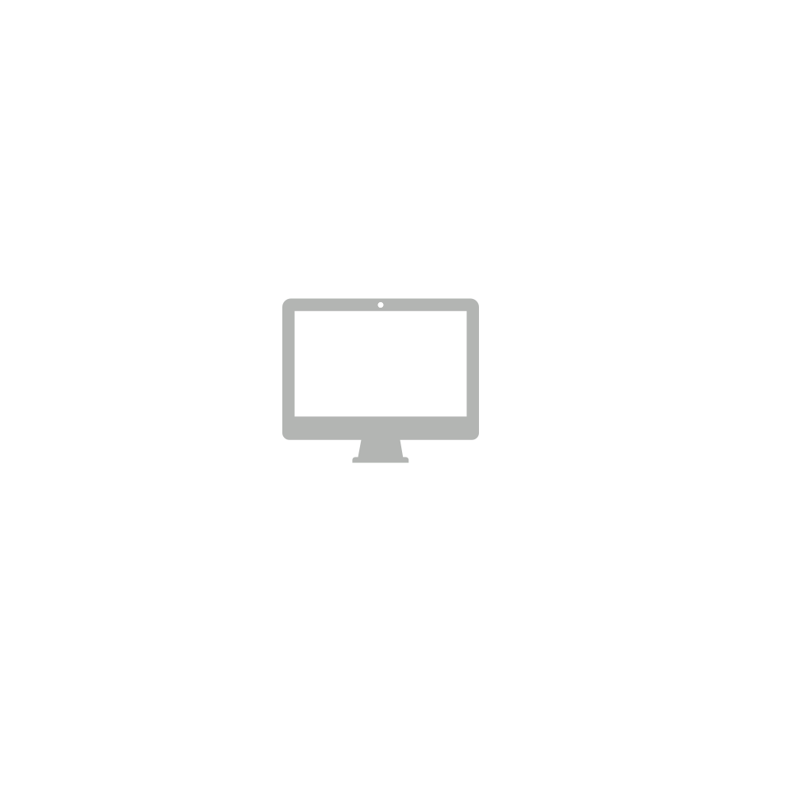

Proyectos
Lost Brainzz
Proyecto Final de la asignatura de Programación II en Java.
Myths of the Legendary War (MLW)
Proyecto Final de la asignatura de Programación III en Java.
Desarrollado junto a Jon Ander de la Puebla :jonander.delapuebla@opendeusto.es
Study with honors
Proyecto Final de la asignatura de Programación IV en C/C++.
Desarrollado junto a Jon Ander de la Puebla :jonander.delapuebla@opendeusto.es
Repositorios de ejercicios en la universidad
Repositorio con las resoluciones de los ejercicios por mí. Este apartado comprendería 4 repositorios que son los siguientes:
A Repeated Mistake is a Choice: Considering Security Issues and Risks in Quantum Computing from Scratch
Traducción del título: "Un error repetido es una elección: Considerando los problemas y riesgos de seguridad en la computación cuántica desde cero"
Autores: Arias D., Sanz B., de la Puerta J.G., Pastor I., Bringas P.G.
Cita: Arias D., Sanz B., de la Puerta J.G., Pastor I., Bringas P.G. (2022) A Repeated Mistake is a Choice: Considering Security Issues and Risks in Quantum Computing from Scratch. In: Gude Prego J.J., de la Puerta J.G., García Bringas P., Quintián H., Corchado E. (eds) 14th International Conference on Computational Intelligence in Security for Information Systems and 12th International Conference on European Transnational Educational (CISIS 2021 and ICEUTE 2021). CISIS - ICEUTE 2021. Advances in Intelligent Systems and Computing, vol 1400. Springer, Cham. https://doi.org/10.1007/978-3-030-87872-6_16
Repositorio de Processing
Repositorio con varios proyectos en Processing. En general, para experimentar con el entorno de desarrollo.
Proyectos recomendables de visitar: Basic Lunar Landing y PIDAY
Repositorio de Ingeniería Web
Repositorio con varios proyectos de la asignatura Ing. Web. Esta página se incluye en este repositorio.
Gestión de Tareas en Android (Proyecto en desarrollo...)
En desarrollo...